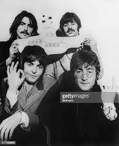
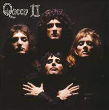
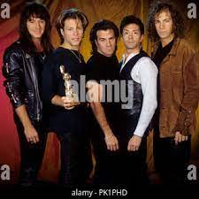
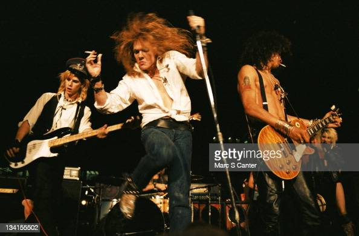

Top 5 melhores bandas de rock
1- THE BEATLES
Os Beatles são considerados por uma grande parcela dos estudiosos de música e cultura como a maior banda de todos os tempos. A banda foi formada em 1960 e esteve em atividade por dez anos. Inicialmente, no final dos anos 50, conhecidos como The Quarrymen, a banda passou a ser formada, mais tarde, por John Lennon, Paul McCartney, George Harrison e Ringo Starr e adotaram o nome The Beatles.
Sucessos da banda: Yesterday(1965), Hey Jude(1968), I Want To Hold Your Hand(1963), entre outras.

2- QUEEN
Inicialmente chamada de Smile, Queen foi uma das maiores bandas mundial que foi de 1970 até 1991 com sua formação clássica, formada por: Freddie Mercury(Vocalista e Piano), Brian May(Guitarra), John Deacon(Baixo), Roger Taylor(Bateria).
Algumas canções do grupo: Bohemian Raphsody(1975), Radio Ga Ga(1984), Don´t Stop Me Now(1979), We Are The Champions(1977), entre outras.

3- NIRVANA
Nirvana foi uma banda norte-americana de grunge e rock alternativo formada pelo vocalista e guitarrista Kurt Cobain e pelo baixista Krist Novoselic em Aberdeen no ano de 1987, que obteve grande sucesso no movimento grunge de Seattle no início dos anos 1990.
Em 1987, o novo baterista Aaron Burckhard se juntou à banda. No começo, o trio ensaiava o material de Kurt Cobain, mas logo depois começaram a escrever o próprio repertório. Durante os primeiros meses, a banda passou por uma série de nomes, já que Kurt queria um nome que fosse bonito e agradável. Assim, finalmente o grupo se fixou como Nirvana, conceito budista que Cobain descreveu como “a liberdade da dor, do sofrimento e do mundo externo”.
Alguns sucessos da banda: Smells Like Teen Spirit(1991), Come As You Are(1991), Lithium(1991), entre outras.
4- BON JOVI
Bon Jovi é uma banda americana que surgiu no ano de 1983 e segue até os dias atuais.
A formação atual da banda consiste no cantor Jon Bon Jovi, no tecladista David Bryan, no baterista Tico Torres, no guitarrista Phil X e no baixista Hugh McDonald.
Alguns sucessos da banda: Livin´ On A Prayer(1986), It´s My Life(2000), Always(1994), entre outras.

5- GUNS N´ROSES
O Guns N' Roses é formado em Los Angeles, Califórnia, em 1985, com membros das bandas Hollywood Rose e L.A. Guns. A formação vai mudando até chegar ao line-up clássico, com Axl Rose nos vocais, Slash e Izzy Stradlin nas guitarras, Duff McKagan no baixo e Steven Adler na bateria.
Com shows incendiários e postura beligerante, o quinteto torna rapidamente sensação no circuito de shows de Hollywood e começa a chamar atenção das grandes gravadoras, em 1986.
Alguns sucessos da banda: November Rain(1991), Sweet Child O´ Mine(1987), Patience(1988), Welcome To The Jungle(1987), entre outras.
